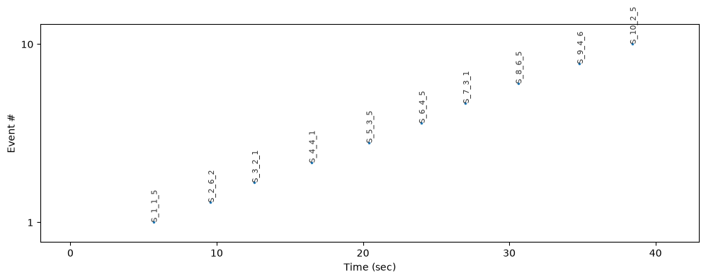

Events#
Events are time points marked during a recording, usually triggers that the experiment software sends to the eye tracker (e.g., “stimulus on”, “response”). Each event has an onset time and a label. This tutorial shows how to look at events, select the ones you need and change them, using the Events class.
[1]:
import pypillometry as pp
from pypillometry import u
import numpy as np
import matplotlib.pyplot as plt
pp.logging_set_level("WARNING")
d = pp.get_example_data("rlmw_002_short")
Getting the events#
get_events() returns the events of a dataset as an Events object. In a notebook, it is shown as a table:
[2]:
events = d.get_events()
events
[2]:
| Onset (ms) | Label | |
|---|---|---|
| 0 | 5177.0 | F_1 |
| 1 | 5677.0 | S_1_1_5 |
| 2 | 6773.0 | C_1_5_2 |
| 3 | 7010.0 | R_1_15 |
| 4 | 8776.0 | F_2 |
| 5 | 9575.0 | S_2_6_2 |
| 6 | 10581.0 | C_2_6_1 |
| 7 | 10808.0 | R_2_20 |
| 8 | 12374.0 | F_3 |
| 9 | 12574.0 | S_3_2_1 |
| 10 | 13733.0 | C_3_2_1 |
| 11 | 13957.0 | R_3_18 |
| 12 | 15973.0 | F_4 |
| 13 | 16473.0 | S_4_4_1 |
| 14 | 17589.0 | C_4_1_2 |
| 15 | 17822.0 | R_4_11 |
| 16 | 19588.0 | F_5 |
| 17 | 20388.0 | S_5_3_5 |
| 18 | 21156.0 | C_5_5_2 |
| 19 | 21388.0 | R_5_17 |
| 20 | 23187.0 | F_6 |
| 21 | 23987.0 | S_6_4_5 |
| 22 | 24916.0 | C_6_5_2 |
| 23 | 25153.0 | R_6_20 |
| 24 | 26802.0 | F_7 |
| 25 | 27002.0 | S_7_3_1 |
| 26 | 28116.0 | C_7_1_2 |
| 27 | 28352.0 | R_7_6 |
| 28 | 30401.0 | F_8 |
| 29 | 30601.0 | S_8_6_5 |
| 30 | 31508.0 | C_8_6_1 |
| 31 | 31734.0 | R_8_18 |
| 32 | 34000.0 | F_9 |
| 33 | 34799.0 | S_9_4_6 |
| 34 | 35700.0 | C_9_6_2 |
| 35 | 35932.0 | R_9_19 |
| 36 | 37615.0 | F_10 |
| 37 | 38415.0 | S_10_2_5 |
| 38 | 39412.0 | C_10_5_2 |
| 39 | 39648.0 | R_10_18 |
Total: 40 events | Data range: [0.0, 40928.0] ms
The onsets are in ms by default. Use units= to get them in other units, or convert an existing object with to_units():
[3]:
d.get_events(units="sec")[:4]
[3]:
| Onset (sec) | Label | |
|---|---|---|
| 0 | 5.177 | F_1 |
| 1 | 5.677 | S_1_1_5 |
| 2 | 6.773 | C_1_5_2 |
| 3 | 7.010 | R_1_15 |
Total: 4 events | Data range: [0.0, 40.9] sec
[4]:
events.to_units("min").onsets[:4]
[4]:
array([0.08628333, 0.09461667, 0.11288333, 0.11683333])
The onsets and labels are stored as numpy arrays. An Events object has a length and can be iterated over and indexed like a list. Indexing returns a new Events object:
[5]:
print(len(events))
for onset, label in events[:3]:
print(f"{label:10s} at {onset:.0f} ms")
40
F_1 at 5177 ms
S_1_1_5 at 5677 ms
C_1_5_2 at 6773 ms
[6]:
events.onsets[:5], events.labels[:5]
[6]:
(array([5177., 5677., 6773., 7010., 8776.]),
array(['F_1', 'S_1_1_5', 'C_1_5_2', 'R_1_15', 'F_2'], dtype='<U8'))
Selecting events#
filter() returns the events that match a criterion. There are three kinds of criteria.
A string selects all labels that contain it:
[7]:
events.filter("S_")
[7]:
| Onset (ms) | Label | |
|---|---|---|
| 0 | 5677.0 | S_1_1_5 |
| 1 | 9575.0 | S_2_6_2 |
| 2 | 12574.0 | S_3_2_1 |
| 3 | 16473.0 | S_4_4_1 |
| 4 | 20388.0 | S_5_3_5 |
| 5 | 23987.0 | S_6_4_5 |
| 6 | 27002.0 | S_7_3_1 |
| 7 | 30601.0 | S_8_6_5 |
| 8 | 34799.0 | S_9_4_6 |
| 9 | 38415.0 | S_10_2_5 |
Total: 10 events | Data range: [0.0, 40928.0] ms
A function is called with each label and selects the events for which it returns True. In this dataset, the labels of the R events end with a number; here we select those where it is larger than 18:
[8]:
def high_number(label):
parts = label.split("_")
return parts[0] == "R" and int(parts[-1]) > 18
events.filter(high_number)
[8]:
| Onset (ms) | Label | |
|---|---|---|
| 0 | 10808.0 | R_2_20 |
| 1 | 25153.0 | R_6_20 |
| 2 | 35932.0 | R_9_19 |
Total: 3 events | Data range: [0.0, 40928.0] ms
A tuple (start, end) selects events by their onset, in the units of the Events object (here, ms):
[9]:
events.filter((10_000, 20_000))
[9]:
| Onset (ms) | Label | |
|---|---|---|
| 0 | 10581.0 | C_2_6_1 |
| 1 | 10808.0 | R_2_20 |
| 2 | 12374.0 | F_3 |
| 3 | 12574.0 | S_3_2_1 |
| 4 | 13733.0 | C_3_2_1 |
| 5 | 13957.0 | R_3_18 |
| 6 | 15973.0 | F_4 |
| 7 | 16473.0 | S_4_4_1 |
| 8 | 17589.0 | C_4_1_2 |
| 9 | 17822.0 | R_4_11 |
| 10 | 19588.0 | F_5 |
Total: 11 events | Data range: [0.0, 40928.0] ms
Since filter() returns a new Events object, filters can be chained, e.g., the S events in the first 20 seconds:
[10]:
events.filter("S_").filter((0, 20_000))
[10]:
| Onset (ms) | Label | |
|---|---|---|
| 0 | 5677.0 | S_1_1_5 |
| 1 | 9575.0 | S_2_6_2 |
| 2 | 12574.0 | S_3_2_1 |
| 3 | 16473.0 | S_4_4_1 |
Total: 4 events | Data range: [0.0, 40928.0] ms
test_selector() shows which events of a dataset a selector picks out, which is useful while writing a selection function:
[11]:
from pypillometry.convenience import test_selector
test_selector(d, high_number)
[11]:
array(['R_2_20', 'R_6_20', 'R_9_19'], dtype=object)
Plotting events#
plot() shows when the events happened. Each event is a point; the labels of some of them are shown (use show_labels="all" for all):
[12]:
plt.figure(figsize=(12, 4))
events.filter("S_").plot(units="sec", show_labels="all")

Events are also shown in most plots of the data, e.g., in d.plot.pupil_plot().
Using events for intervals#
Analyses usually look at the data around events. get_intervals() takes the same kinds of selectors as filter() (string or function), and also an Events object. This makes it easy to use any selection of events, e.g., only the first five stimuli:
[13]:
first_stimuli = events.filter("S_")[:5]
d.get_intervals(first_stimuli, (-200, 800) * u.ms)
[13]:
Intervals 'events_5' | 5 intervals (total duration: 5000.00 ms), 1000.00 ms +/- 0.00 ms, [1000.00 ms, 1000.00 ms] | fs=500.0Hz
See the Intervals tutorial for more on intervals.
Creating and changing events#
Events objects can also be created directly. Onsets with units are converted, and the object keeps the units:
[14]:
my_events = pp.Events([1, 2.5, 4] * u.sec, ["start", "probe", "end"])
my_events
[14]:
| Onset (sec) | Label | |
|---|---|---|
| 0 | 1.0 | start |
| 1 | 2.5 | probe |
| 2 | 4.0 | end |
Total: 3 events
set_events() replaces the events of a dataset. For example, we can shorten the labels to just the event type (the first letter). The onsets stay the same:
[15]:
short_labels = [label.split("_")[0] for label in events.labels]
d.set_events(pp.Events(events.onsets, short_labels))
d.get_events()[:6]
[15]:
| Onset (ms) | Label | |
|---|---|---|
| 0 | 5177.0 | F |
| 1 | 5677.0 | S |
| 2 | 6773.0 | C |
| 3 | 7010.0 | R |
| 4 | 8776.0 | F |
| 5 | 9575.0 | S |
Total: 6 events | Data range: [0.0, 40928.0] ms
Like other methods, set_events() changes the object in place unless inplace=False is given.
As another example, we add the onset of each blink as an event. Blinks are stored as Intervals (see the blinks tutorial); we take their start times in ms, combine them with the existing events and sort everything by time:
[16]:
d.pupil_blinks_detect(apply_mask=True)
blinks = d.get_blinks("left", "pupil", units="ms")
blink_onsets = [start for start, end in blinks]
events = d.get_events()
onsets = np.concatenate([events.onsets, blink_onsets])
labels = np.concatenate([events.labels, ["blink"] * len(blink_onsets)])
order = np.argsort(onsets)
d.set_events(pp.Events(onsets[order], labels[order]))
d.get_events()[:12]
[16]:
| Onset (ms) | Label | |
|---|---|---|
| 0 | 5177.0 | F |
| 1 | 5408.0 | blink |
| 2 | 5677.0 | S |
| 3 | 6773.0 | C |
| 4 | 7010.0 | R |
| 5 | 7562.0 | blink |
| 6 | 7864.0 | blink |
| 7 | 8130.0 | blink |
| 8 | 8776.0 | F |
| 9 | 9575.0 | S |
| 10 | 10484.0 | blink |
| 11 | 10581.0 | C |
Total: 12 events | Data range: [0.0, 40928.0] ms
The blink onsets can now be used like any other event, e.g., to look at the pupil around blinks with d.get_intervals("blink", ...).